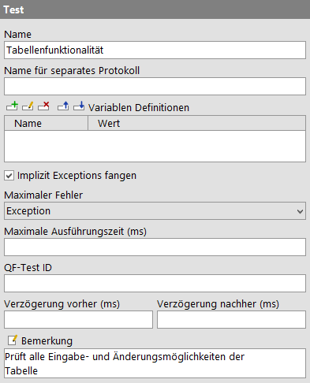

| Version 6.0.3 |
Die folgenden Knoten wurden im Laufe der Entwicklungszeit von QF-Test angeboten, werden aber nicht mehr weitergepflegt. Aus Gründen der Rückwärtskompatibilität können diese aber noch ausgeführt werden.
|
|
Hinweis Vor QF-Test Version 2 war der 'Test' Knoten einer der zentralen Bausteine einer Testsuite. Er hat allerdings einige Schwachpunkte. So ist zum Beispiel seine Struktur für Vorbereitungs- und Aufräumarbeiten für komplexe Szenarios zu unflexibel. Außerdem war nie klar, ob ein 'Test' Knoten einen logischen Testfall repräsentiert oder nur zur Implementierung einer einfachen Sequenz dient. Daher wurden 'Test' Knoten durch 'Testfallsatz' und 'Testfall' Knoten abgelöst. Ein 'Test' ist eine besondere Sequenz, die es erlaubt, vor und nach der Ausführung jedes ihrer Childknoten spezielle Maßnahmen zu treffen, um einen gesicherten Ausgangszustand herzustellen. Dazu kann der Test neben seinen normalen Children als erstes Child einen 'Vorbereitung' und als letztes Child einen 'Aufräumen' Knoten enthalten. Die 'Vorbereitung' wird vor, das 'Aufräumen' nach jedem normalen Childknoten ausgeführt. Mit seinem Attribut 'Implizit Exceptions fangen' bietet ein 'Test' eine besondere Möglichkeit zur Behandlung von Exceptions um den Abbruch eines gesamten Testlaufs durch eine einzelne Exception in einem 'Test' zu verhindern. Für spezielle Fälle von datengetriebenem Testen kann der 'Test' auch einen 'Datentreiber' enthalten. Im Regelfall wird dies jedoch mit Hilfe von 'Testfallsätze' realisiert, wie in Kapitel 20 beschrieben. Dieser Anwendungsfall kann auch per 'Testschritt' Knoten abgedeckt werden. Aus Gründen der Rückwärtskompatibilität und um den Übergang von den alten 'Test' Knoten zu den modernen 'Testfallsatz' und 'Testfall' Knoten zu erleichtern, behandelt QF-Test 'Test' Knoten im Report analog zu 'Testfallsatz' oder 'Testfall' Knoten, sofern deren Position in der Hierarchie dies zulässt. In einigen Fällen konnte ein 'Test' Knoten auch wie ein 'Testschritt' behandelt werden, um z.B. datengetriebene Testschritte zu erlauben. Alte Testsuiten, deren Struktur noch auf 'Test' Knoten basiert, können migriert werden, um die neuen Features von 'Testfallsätze' und 'Testfälle' zu nutzen. Klicken Sie hierzu mit der rechten Maustaste auf einen Knoten, um dessen Kontextmenü anzuzeigen. Wenn eine Transformation erlaubt ist, wird QF-Test anbieten, den 'Test' Knoten in einen 'Testfallsatz', 'Testfall' oder 'Testschritt' Knoten umzuwandeln. 3.0+ Um eine ganze Hierarchie von 'Test' Knoten zu transformieren müssen Sie von oben nach unten arbeiten oder die Knotentransformation "Testfallsatz rekursiv" anwenden. Hinweis Sowohl 'Testfallsatz' als auch 'Testfall' Knoten können aus Gründen der Rückwärtskompatibilität 'Vorbereitung' und 'Aufräumen' Knoten enthalten. Bei einem 'Testfallsatz' verhalten sich diese genau wie bei einem 'Test', d.h. 'Vorbereitung' und 'Aufräumen' Knoten werden vor und nach jedem im 'Testfallsatz' enthalten Test ausgeführt. Bei einem 'Testfall' werden hingegen 'Vorbereitung' und 'Aufräumen' nur einmal ganz zu Beginn und Ende ausgeführt. Enthält ein 'Testfallsatz' oder 'Testfall' Knoten sowohl 'Abhängigkeit' als auch 'Vorbereitung'/'Aufräumen' Knoten wir die 'Abhängigkeit' zuerst aufgelöst. 'Vorbereitung' und 'Aufräumen' haben keinen Einfluss auf den in Abschnitt 8.6.3 beschriebenen Stapel von Abhängigkeiten. |
Enthalten in: Alle Arten von Sequenzen.
Kinder: Ein optionaler 'Datentreiber' gefolgt von einer optionalen 'Vorbereitung' am Anfang, dann beliebige ausführbare Knoten und ein optionales 'Aufräumen' am Ende.
Ausführung: Die 'Variablen Definitionen' des 'Tests' werden gebunden. Ist ein 'Datentreiber' Knoten vorhanden, wird dieser ausgeführt, um einen entsprechenden Datenkontext zu erzeugen und einen oder mehrere 'Daten' Knoten zu binden mit dem Zweck, über die ermittelten Datensätze zu iterieren (vgl. Kapitel 20). Für jeden normalen Childknoten des Tests wird zunächst die 'Vorbereitung' ausgeführt, dann das Child, dann der 'Aufräumen' Knoten. Zuletzt werden die Variablen des Tests wieder gelöscht.
Attribute:
|
|  | ||
|
| Abbildung 38.88: 'Test' Attribute | ||
Der Name einer Sequenz ist eine Art Kurzkommentar. Er wird in der Baumdarstellung der Testsuite angegeben und sollte etwas über die Funktion der Sequenz aussagen.
Variabel: Nein
Einschränkungen: Keine
Mit diesem Attribut kann ein Knoten als Bruchstelle zum Abteilen eines Protokolls markiert werden. Es legt den Dateinamen für das abgeteilte Protokoll fest. Nach Durchlaufen des Knotens wird das zugehörige Protokoll aus dem Hauptprotokoll entfernt und als eigenständiges Protokoll gespeichert. Diese Operation ist vollständig transparent, da das Hauptprotokoll eine Referenz auf das abgeteilte Protokoll erhält und somit vollständig navigierbar bleibt. Näheres zu geteilten Protokollen finden Sie in Abschnitt 7.1.5.
Dieses Attribut hat keinen Effekt, wenn die Option Geteilte Protokolle erzeugen
deaktiviert ist oder geteilte Protokolle durch explizite Angabe von -splitlog im
Batchmodus ausgeschaltet werden.
Es ist nicht nötig für Eindeutigkeit der Dateinamen für abgeteilte Protokolle zu sorgen. Wo nötig hängt QF-Test eine Zahl an den Dateinamen an, um Konflikte zu vermeiden. Der Dateiname darf Verzeichnisse enthalten und es können - analog zur Angabe des Dateinamens für das Protokoll im Batchmodus - folgende Platzhalter in Kombination mit einem '%' oder '+' Zeichen verwendet werden:
|
|
|
||||||||||||||||||||||||||||||||||
|
| Tabelle 38.32: Platzhalter für das Attribut 'Name für separates Protokoll' | ||||||||||||||||||||||||||||||||||
Variabel: Ja
Einschränkungen: Keine, Zeichen die für Dateinamen nicht zulässig sind werden durch '_' ersetzt.
Hier können Sie Werte für Variablen definieren, die während der Ausführung der Children der Sequenz Gültigkeit besitzen. Näheres zur Arbeit mit der Tabelle finden Sie in Abschnitt 2.2.5. Eine detaillierte Erklärung zur Definition und Verwendung von Variablen finden Sie in Kapitel 6.
Variabel: Namen der Variablen nein, Werte ja
Einschränkungen: Keine
Wenn in einem der Children des Tests eine Exception auftritt, die nicht abgefangen wird, ist der Test normalerweise beendet. Das ist oft nicht wünschenswert, da man keine Information über den Testausgang der weiteren Children erhält.
Wenn 'Vorbereitung' und 'Aufräumen' so beschaffen sind, dass Sie den Ausgangszustand auch dann sicher stellen können, wenn eine Exception in einem normalen Child des Tests auftritt, können Sie hiermit die Exception implizit abfangen.
Anstatt dann bei einer Exception abzubrechen, protokolliert der Test diese und fährt mit dem 'Aufräumen' fort. Anschließend wird der nächste Childknoten ganz normal mit 'Vorbereitung' und 'Aufräumen' ausgeführt.
Exceptions, die während der 'Vorbereitung' oder des 'Aufräumen' auftreten, können auf diesem Weg nicht abgefangen werden.
Variabel: Nein
Einschränkungen: Keine
Wenn beim Ablauf des Tests innerhalb der Sequenz eine Warnung, ein Fehler oder eine Exception auftritt, wird dieser Status im Protokoll normalerweise an die übergeordneten Knoten weitergeleitet. Mit diesem Attribut können Sie den Fehlerstatus, den das Protokoll für diese Sequenz erhält, beschränken.
Hinweis Dieser Wert beeinflusst ausschließlich den Status des Protokolls und damit den Rückgabewert von QF-Test falls es im Batchmodus läuft (vgl. Abschnitt 1.7). Auf die Behandlung von Exceptions hat er keinen Einfluss.
Auch für die Erstellung kompakter Protokolle (vgl. Kompakte Protokolle erstellen), hat dieser Wert keinen Einfluss. Eine Sequenz, in der eine Warnung oder ein Fehler auftritt, wird nicht aus einem kompakten Protokoll entfernt, selbst wenn über dieses Attribut der Fehlerstatus auf "Keinen Fehler" zurückgesetzt wird.
Variabel: Nein
Einschränkungen: Keine
Zeit in Millisekunden, die der Knoten maximal ausgeführt werden soll. Nach Ablauf dieser Zeit wird der Knoten abgebrochen.
Variabel: Ja
Einschränkungen: >= 0
Bei der Ausführung von Tests im Batchmodus kann beim Kommandozeilenargument
-test <Index>|<ID> alternativ zum qualifizierten Namen die 'QF-Test ID' des Knotens angegeben
werden.
Variabel: Nein
Einschränkungen: Darf keines der Zeichen '\', '#', '$', '@', '&', oder '%' enthalten und nicht mit einem Unterstrich ('_') beginnen.
Mit diesen Parametern kann vor oder nach der Ausführung eine Verzögerung bewirkt werden. Sind sie nicht gesetzt, wird die Standardverzögerung aus den Optionen verwendet.
Variabel: Ja
Einschränkungen: Leer oder >0
Hier können Sie einen beliebigen Kommentar eintragen.
Hinweis Für die ausführliche Dokumentation, insbesondere von 'Testfallsatz',
'Testfall' oder 'Prozedur' Knoten, ist dieses Textfeld womöglich nicht
der geeignete Ort. Es gibt hervorragende Editoren, die
wesentlich besser dafür geeignet sind. Mittels der Option Kommando für externen Editor kann ein externer Editor festgelegt werden, in dem nach Drücken
von [Alt-Eingabe] oder Klicken des  Buttons der Kommentar komfortabel bearbeitet werden kann.
Buttons der Kommentar komfortabel bearbeitet werden kann.
Für einige Knoten können Sie ein spezielles Verhalten per Doctags konfigurieren, siehe Doctags.
Falls bei 'Komponenten' Knoten in dem Bemerkungsfeld eine Eintragung gemacht wurde, wird der Knoten bei der Suche bzw. dem Löschen von ungenutzten Komponenten übersprungen.
Variabel: Ja
Einschränkungen: Keine
| Letzte Änderung: 6.9.2022 Copyright © 1999-2022 Quality First Software GmbH |